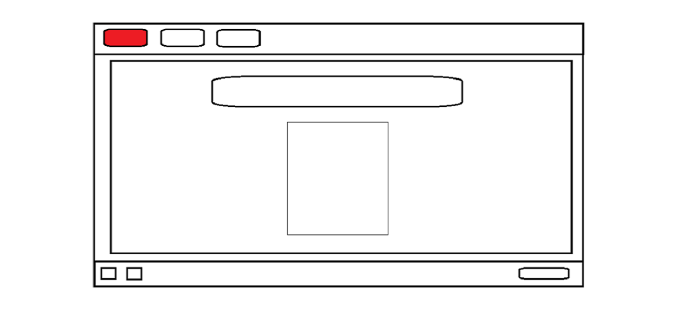
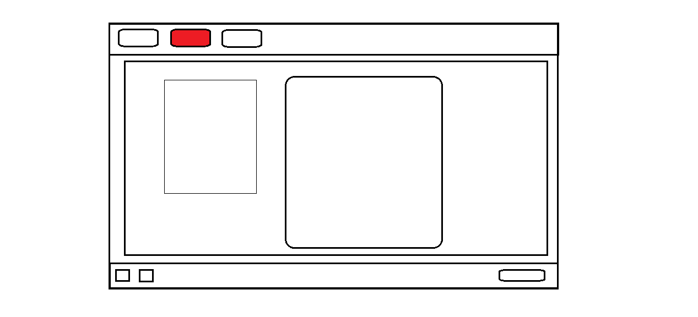
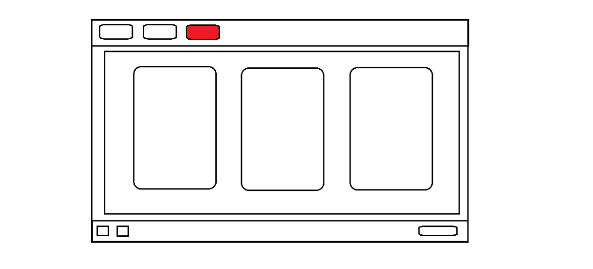

 A főoldal terve
 A "rólam" oldal terve
 A "projektek" oldal terve
Mielőtt belekezdtem a munkába, készítettem paintben minden oldalról egy látványtervet. Figyelembe véve hogy még sosem csináltam ilyet, nem akartam nagyon bonyolult elrendezést. Inkább olyat rajzoltam meg, amihez úgy gondoltam, hogy tudom tartani magam. Ez nagyjából sikerült is.
A legnagyobb nehézséget az jelentette, hogy egymás mellé helyezzek el elemeket, amik aztán nagyjából vállalhatóan viselkednek akkor is, ha változik a képernyő mérete. Ezek megoldása csak rengeteg próbálgatással, kísérletezgetéssel, kikommenteléssel sikerült. Először igyekeztem az elrendezésre koncentrálni, ezután foglalkoztam a dizájnnal. Ezt sokkal könnyebbnek és élvezetesebbnek találtam. Menet közben többször változtattam a gombok alakján, a háttér színén. Eredetileg mindenhova leherekítéseket tettem, de végül ezeket lehagytam, így kicsit modernebb kinézete lett az oldalnak.
Szívem szerint a "rólam" oldalt úgy oldottam volna meg, hogy a kép kicsit közelebb legyen a jobboldali szöveghez, de erre a grid elrendezésben nem találtam megoldást. Itt azért használtam gridet, hogy mobilos nézetben szépen egymás alá kerüljenek az elemek. Biztos vagyok benne hogy lett volna rá más, megfelelőbb megoldás, de végül megelégedtem a jelenlegi alakjával. Az egyetlen lényegi változás az eredeti tervhez képest a főoldalon volt, ahol a fénykép alá behelyeztem egy kisebb szöveget.
Segítségül használt weboldalak:
www.w3schools.com
www.youtube.com
www.css-tricks.com
www.html-css-js.com
A legnagyobb nehézséget az jelentette, hogy egymás mellé helyezzek el elemeket, amik aztán nagyjából vállalhatóan viselkednek akkor is, ha változik a képernyő mérete. Ezek megoldása csak rengeteg próbálgatással, kísérletezgetéssel, kikommenteléssel sikerült. Először igyekeztem az elrendezésre koncentrálni, ezután foglalkoztam a dizájnnal. Ezt sokkal könnyebbnek és élvezetesebbnek találtam. Menet közben többször változtattam a gombok alakján, a háttér színén. Eredetileg mindenhova leherekítéseket tettem, de végül ezeket lehagytam, így kicsit modernebb kinézete lett az oldalnak.
Szívem szerint a "rólam" oldalt úgy oldottam volna meg, hogy a kép kicsit közelebb legyen a jobboldali szöveghez, de erre a grid elrendezésben nem találtam megoldást. Itt azért használtam gridet, hogy mobilos nézetben szépen egymás alá kerüljenek az elemek. Biztos vagyok benne hogy lett volna rá más, megfelelőbb megoldás, de végül megelégedtem a jelenlegi alakjával. Az egyetlen lényegi változás az eredeti tervhez képest a főoldalon volt, ahol a fénykép alá behelyeztem egy kisebb szöveget.
Segítségül használt weboldalak:
www.w3schools.com
www.youtube.com
www.css-tricks.com
www.html-css-js.com